statsmodels.tsa.statespace.representation.Representation¶
-
class
statsmodels.tsa.statespace.representation.Representation(k_endog, k_states, k_posdef=None, initial_variance=1000000.0, nobs=0, dtype=<class 'numpy.float64'>, design=None, obs_intercept=None, obs_cov=None, transition=None, state_intercept=None, selection=None, state_cov=None, **kwargs)[source]¶ State space representation of a time series process
Parameters: k_endog : array_like or integer
The observed time-series process
 if array like or the
number of variables in the process if an integer.
if array like or the
number of variables in the process if an integer.k_states : int
The dimension of the unobserved state process.
k_posdef : int, optional
The dimension of a guaranteed positive definite covariance matrix describing the shocks in the measurement equation. Must be less than or equal to k_states. Default is k_states.
initial_variance : float, optional
Initial variance used when approximate diffuse initialization is specified. Default is 1e6.
initialization : {‘approximate_diffuse’,’stationary’,’known’}, optional
Initialization method for the initial state.
initial_state : array_like, optional
If known initialization is used, the mean of the initial state’s distribution.
initial_state_cov : array_like, optional
If known initialization is used, the covariance matrix of the initial state’s distribution.
nobs : integer, optional
If an endogenous vector is not given (i.e. k_endog is an integer), the number of observations can optionally be specified. If not specified, they will be set to zero until data is bound to the model.
dtype : dtype, optional
If an endogenous vector is not given (i.e. k_endog is an integer), the default datatype of the state space matrices can optionally be specified. Default is np.float64.
design : array_like, optional
The design matrix,
 . Default is set to zeros.
. Default is set to zeros.obs_intercept : array_like, optional
The intercept for the observation equation, 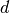. Default is set to zeros.
obs_cov : array_like, optional
The covariance matrix for the observation equation
 . Default
is set to zeros.
. Default
is set to zeros.transition : array_like, optional
The transition matrix,
 . Default is set to zeros.
. Default is set to zeros.state_intercept : array_like, optional
The intercept for the transition equation, 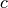. Default is set to zeros.
selection : array_like, optional
The selection matrix, 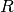. Default is set to zeros.
state_cov : array_like, optional
The covariance matrix for the state equation
 . Default is set
to zeros.
. Default is set
to zeros.**kwargs
Additional keyword arguments. Not used directly. It is present to improve compatibility with subclasses, so that they can use **kwargs to specify any default state space matrices (e.g. design) without having to clean out any other keyword arguments they might have been passed.
Notes
A general state space model is of the form

where
 refers to the observation vector at time
refers to the observation vector at time  ,
,
 refers to the (unobserved) state vector at time
, and where the irregular components are defined as
refers to the (unobserved) state vector at time
, and where the irregular components are defined as
The remaining variables (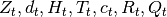) in the equations are matrices describing the process. Their variable names and dimensions are as follows
Z : design 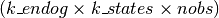
d : obs_intercept

H : obs_cov

T : transition 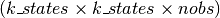
c : state_intercept 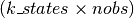
R : selection 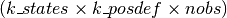
Q : state_cov

In the case that one of the matrices is time-invariant (so that, for example,
 ), its last dimension may
be of size 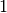 rather than size nobs.
), its last dimension may
be of size 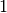 rather than size nobs.References
[R79] Durbin, James, and Siem Jan Koopman. 2012. Time Series Analysis by State Space Methods: Second Edition. Oxford University Press. Attributes
nobs (int) The number of observations. k_endog (int) The dimension of the observation series. k_states (int) The dimension of the unobserved state process. k_posdef (int) The dimension of a guaranteed positive definite covariance matrix describing the shocks in the measurement equation. shapes (dictionary of name:tuple) A dictionary recording the initial shapes of each of the representation matrices as tuples. initialization (str) Kalman filter initialization method. Default is unset. initial_variance (float) Initial variance for approximate diffuse initialization. Default is 1e6. Methods
bind(endog)Bind data to the statespace representation initialize_approximate_diffuse([variance])Initialize the statespace model with approximate diffuse values. initialize_known(initial_state, ...)Initialize the statespace model with known distribution for initial state. initialize_stationary()Initialize the statespace model as stationary. Methods
bind(endog)Bind data to the statespace representation initialize_approximate_diffuse([variance])Initialize the statespace model with approximate diffuse values. initialize_known(initial_state, ...)Initialize the statespace model with known distribution for initial state. initialize_stationary()Initialize the statespace model as stationary. Attributes
design(array) Design matrix: 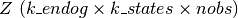 dtype(dtype) Datatype of currently active representation matrices endog(array) The observation vector, alias for obs. obs(array) Observation vector: 
obs_cov(array) Observation covariance matrix: obs_intercept(array) Observation intercept: 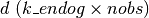 prefix(str) BLAS prefix of currently active representation matrices selection(array) Selection matrix: 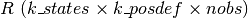 state_cov(array) State covariance matrix: 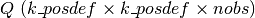 state_intercept(array) State intercept: 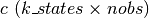 time_invariant(bool) Whether or not currently active representation matrices are transition(array) Transition matrix: 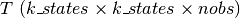